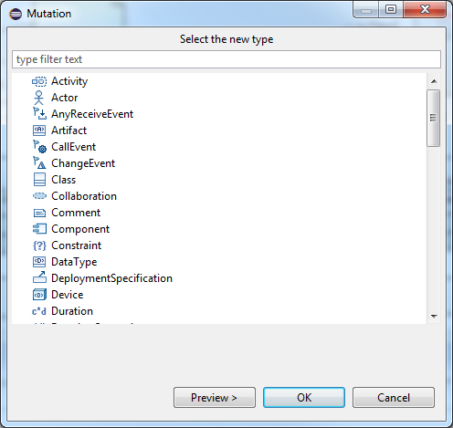

The "mutate" refactoring gives the user the possibility to change the type of an UML element. You can select several elements but they have to be instances of the same type to execute this refactoring.
The following image illustrates the Mutate refactoring dialog.

All the types are displayed in a list refined from the selected element and its context. You have to select the type the selected element(s) will be instance(s) of.